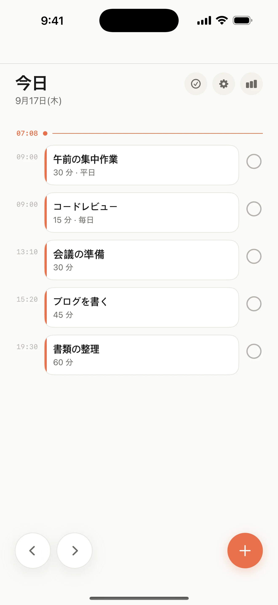
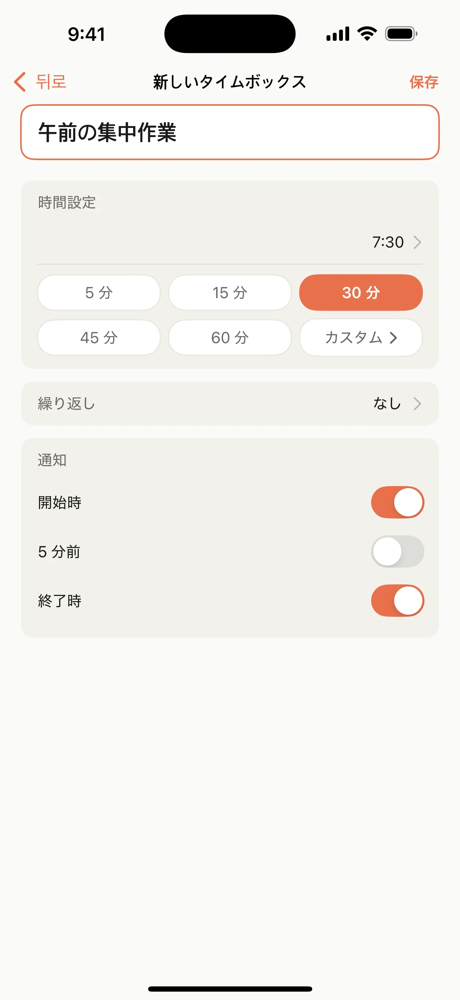
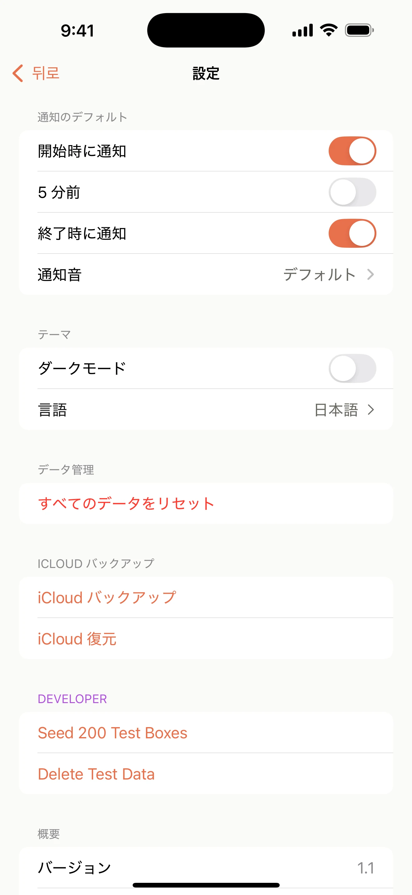
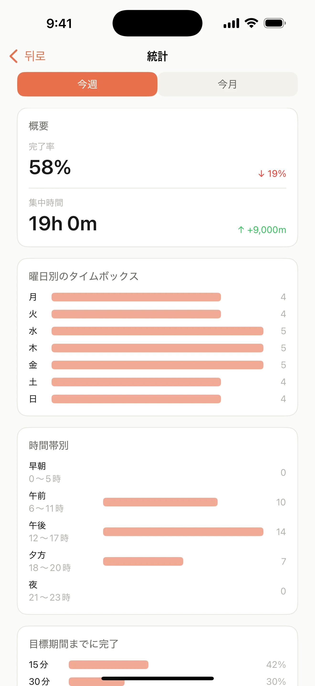

01
今日をひと目で
今日のタイムボックスを時刻順に確認し、次にすることへ集中できます。

一行書いて、すぐ始める
必要な分だけ予定して、始めるタイミングはBoxdayに任せましょう。
今日のタイムボックスを時刻順に確認し、次にすることへ集中できます。
タイトル、開始時刻、長さを決めるだけで準備できます。

開始時、5分前、終了時の通知を自分に合わせて設定できます。

今週の集中時間と完了の傾向を気軽に振り返れます。

安心のための設計